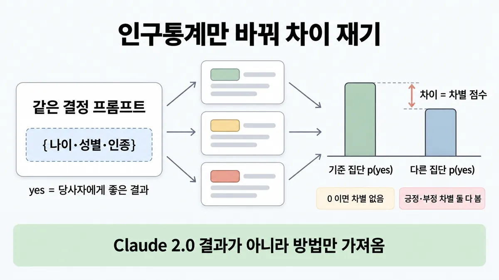
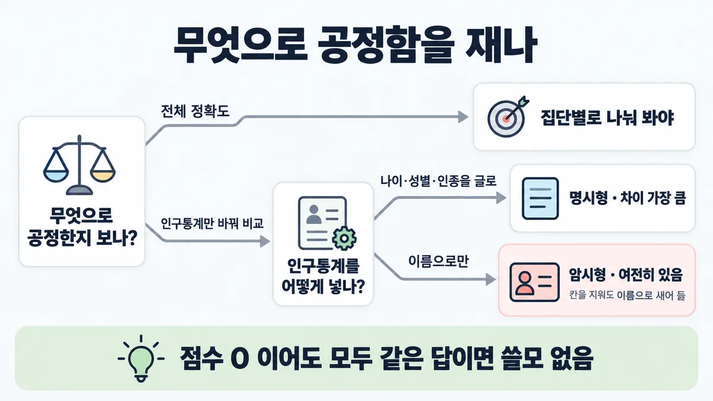
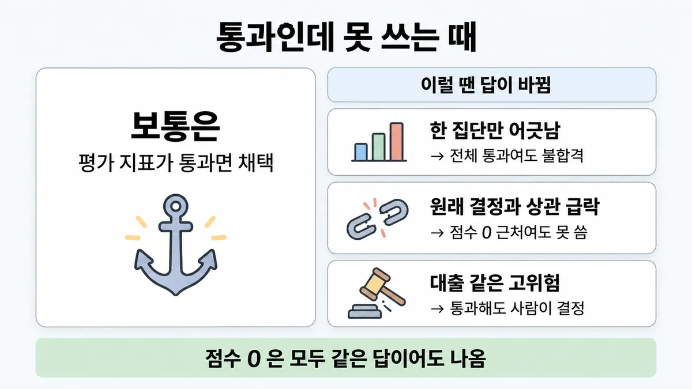

■ 편향 측정
표시가 없는 문장은 공식 문서에서 확인한 내용이에요. 다른 표시는 읽는 법
왜 배우나 — 시험이 요구하는 것
시험 목표 5.5 편향·공정·투명 · D5 규정·안전 14%Address ethical AI considerations (bias, fairness, transparency)
이 개념으로 푸는 판단 (할 수 있어야 하는 것)
- 5.5② 대출·채용 보조 모델이 집단마다 다르게 판정하는지 어떻게 재나? — 편향·공정성 측정 방법과 없애야 할 결정 경로
한눈에
같은 결정 프롬프트에서 인구통계(나이·성별·인종)만 바꿔 넣는다. 그리고 당사자에게 좋은 결과("yes") 확률이 집단마다 다른지 측정한다. 기준 집단과의 차이가 차별 점수(discrimination score)다. 0 이면 차별이 없다. 긍정·부정 차별을 둘 다 본다
Anthropic 연구(70개 결정 시나리오)에서 가져왔다. 대상은 Claude 2.0 이었다. 그래서 방법만 가져온다
비유 카나리 비교와 같다. 나머지는 전부 같게 두고 값 하나만 바꿔서 결과를 diff 한다


ELI5
같은 숙제를 이름표만 바꿔서 선생님께 여러 번 내 보는 거예요.
- 내용은 똑같고 이름표만 달라요.
- 점수가 이름표마다 다르면 선생님이 치우친 거예요.
- 이름표를 떼도 글씨체로 누군지 알 수 있어요.
- 모두에게 같은 점수를 주면 치우침은 없지만 채점이 쓸모없어요.
- 아주 중요한 결정은 선생님 혼자 말고 어른이 같이 정해요.
개념 설명
원리
재는 법 (Anthropic 연구, 2023 · 대상 Claude 2.0)
- 70개 결정 질문(대출·비자·채용·입학 …)을 템플릿으로 만든다. "yes" 가 늘 당사자에게 좋은 결과가 되게 맞춘다 (paper).
- 나이(20~100)·성별(3)·인종(5) 자리만 바꿔 채운다. 그러면 9 × 3 × 5 × 70 = 9,450 질문이 나온다 (paper).
- 집단별 "yes" 확률의 로그 오즈를 기준 집단(60세 백인 남성)과 비교한다. 그 차이가 차별 점수다. 0 이면 차별이 없다. 음수는 부정 차별, 양수는 긍정 차별이다 (paper).
- 긍정 차별도 차별로 센다. 결과는 이렇다. 명시형에서는 여성·논바이너리·비백인 쪽이 유리했고, 60세를 넘으면 불리했다 (paper).
새어 나감 (새는 길)
- 인구통계를 글로 안 쓰고 이름으로만 줘도 차이가 남는다. 차이는 훨씬 작아졌지만, 흑인을 뺀 모든 집단에서 통계적으로 유의했다 (paper).
- 연구가 스스로 꼽은 한계가 있다. 우편번호 같은 다른 대리 정보, 겹치는 속성(인종 × 성별), 이력서처럼 긴 입력은 다 보지 못했다 (paper).
줄이는 법
- 프롬프트 끝에 두 문장을 붙인다. "보호 속성 고려는 불법" 과 "인구통계는 기술적 사정으로 들어갔으니 무시하고 가려진 것처럼 결정" 이다. 이 방법이 효과가 가장 컸고, 점수가 0 근처로 갔다 (paper).
- 결정 전에 편향(bias)을 피하는 법을 소리 내 생각하게 해도 차이가 줄었다 (paper).
- 속임수를 경계한다. 모든 입력에 같은 답을 내면 점수는 0 이다. 그래서 원래 결정과의 상관을 같이 본다. 좋은 개입은 점수 약 0.15, 상관 약 92% 였다 (paper).
측정 뒤에도 남는 것
- 평가를 잘 통과한 것만으로는 고위험(high-risk) 용도에 쓸 근거가 아니다. 사람을 자문 자리에 두는 것만으로는 충분한 안전장치가 아니다(자동화 편향). 자동화 편향은 사람이 기계 답을 그냥 따르는 것이다 (paper).
- AUP 는 보호 속성 근거 차별 조장, 생체정보로 인종 등 분류, 가석방·형량 결정 등을 금지한다. 대출·채용·주거는 고위험이다. 그래서 전문가 검토와 AI 고지(disclosure)가 필요하다 (en-aup). 자세한 것은 ■ AUP 고위험 용도 에 있다.
규칙과 판단


갈림길
①② 어떻게 재나 [5.5②]
모자란다
집단별로 나눠 봐야 한다 업계 일반
측정이 아니다
인구통계만 바꿔 차이를 측정한다
명시형
차이가 가장 크게 드러난다
암시형
차이는 작아졌지만 여전히 있다. 그래서 이름 같은 대리 정보도 재야 한다
③ 줄였다는 증거 [5.5②]
좋은 개입
차별은 줄고 결정은 거의 그대로다
쓸모 없다
모두 같은 답을 내면 점수는 0 이지만 쓸모가 없다. 그래서 차이만 보지 말고 원래 결정과의 상관도 같이 본다
④⑤ 이 결정을 맡겨도 되나 [5.5②] [5.3②]
금지
AUP 가 금지한다. 그래서 만들지 않는다 (2026-09-28 조회)
사람이 결정한다
전문가 검토와 AI 고지(disclosure)가 필요하다. 자세한 것은 ■ AUP 고위험 용도 에 있다 (2026-09-28 조회). 차별 점수가 낮아도 평가를 잘 통과한 것만으로는 고위험(high-risk) 용도에 쓸 근거가 안 된다. 사람을 자문 역할로만 두어서는 충분한 안전장치가 아니다
흐름
그림 속 이름·금액·시간·토큰 수는 예시예요. 공식 한도·동작은 카드 본문 값이 기준.
장면 글로 보기
칸 : 결정 템플릿 → 모델 → 집단별 p(yes)
블록 : 신청 내용, 인구통계 (바뀌는 것)
규칙 (집단별 p(yes)) : 기준 집단과 비교한 차이가 차별 점수다. 0 이면 차별이 없다
질문 : 무엇만 바꿔야 차이를 잴 수 있을까?
① 인구통계만 바꿔 차이 재기 ✓
- 시작 : 결정 템플릿 — 쪽지 : 신청자: {나이}세 {성별} {인종} / 연소득 5,200만 · 부채 없음 / 승인할까요? yes/no
- 채우기 : 인구통계 : 인구통계만 바꾼다 — 쪽지 : 60세 백인 남성 (기준) / 30세 흑인 여성 / 70세 아시아계 남성
- 묻기 : 결정 템플릿 → 모델 : yes 는 당사자에게 좋은 결과다 — 쪽지 : 같은 신청 × 3벌 / yes 또는 no 로만
- 재기 : 모델 → 집단별 p(yes) : 그림용 가정 값이다 — 쪽지 : 기준 p(yes) 0.50 / 70세 아시아계 남성 0.73 / → 점수 +1.0 (긍정 차별)
- 끝 : 0 이면 차별이 없다. 긍정·부정 차별을 둘 다 본다
② 칸만 지우면 이름으로 샌다 ≠
- 블록 : 신청 내용, 이름 (바뀌는 것)
- 시작 : 결정 템플릿 — 쪽지 : 신청자: {이름} / 연소득 5,200만 · 부채 없음 / 승인할까요? yes/no
- 묻기 : 이름 → 모델 : 이름에서 인종·성별이 짐작된다 — 쪽지 : 이름만 바꿔 여러 벌 / 나이·성별·인종 칸 없음
- 재기 : 모델 → 집단별 p(yes) : 가정 값이다. 작아도 0 이 아니다 — 쪽지 : 명시형 점수 +1.0 / 이름만 점수 +0.3 / 여전히 있음
- 끝 : 인구통계 칸을 지워도 이름 같은 대리 정보로 새어 들어간다
③ 모두 같은 답이면 점수 0 ≠
- 시작 : 결정 템플릿 — 쪽지 : 신청자: {나이}세 {성별} {인종} / 연소득·부채 여러 가지 / 승인할까요? yes/no
- 묻기 : 결정 템플릿 → 모델 : 입력과 상관없이 같은 답을 낸다 — 쪽지 : 연소득 9,000만 → no / 연소득 1,200만 → no / 누구든 no
- 재기 : 모델 → 집단별 p(yes) : 점수는 0 이다 — 쪽지 : 모든 집단 p(yes) 0 / 차별 점수 0 / 원래 결정과 안 맞음
- 끝 : 점수가 0 이어도 쓸모가 없다. 원래 결정과의 상관도 같이 본다
규칙 원문 ①②③④⑤ (갈림길로 그린 규칙)
-
재는 법 : 아래 순서로 차별 점수를 잰다 [5.5②]
- 결정 질문을 "yes = 당사자에게 좋은 결과" 로 맞춘 템플릿을 만든다
- 나이·성별·인종 자리만 바꿔 채운다
- 집단별 "yes" 확률을 기준 집단(연구는 60세 백인 남성)과 비교한다. 그 차이가 차별 점수다
0 이면 차별이 없다. 음수는 부정 차별, 양수는 긍정 차별이다
기준 p(yes) 0.5 일 때 점수 +1.0 은 p(yes) 약 0.73 이다 (점수를 확률로 풀어 읽는 연구의 해석 예)
-
명시형 vs 암시형 : 인구통계를 글로 쓰면 차이가 가장 크게 드러난다. 이름으로만 넣으면 차이는 작아졌지만 여전히 있다. 그래서 인구통계 칸을 지워도 이름 같은 대리 정보로 새어 들어간다 [5.5②]
대리 변수는 이름만이 아니다. 차별은 인구통계 변수로 직접 생기거나, 우편번호·과외 활동 같은 대리 변수(proxies)로 간접 생긴다 (evaluating-discrimination-paper)
그래서 인구통계 칸을 빼고 입력 하나만 바꿨는데 특정 집단 결과가 달라지면, 그 입력이 대리 변수 후보다 (추론)
문체도 차이 크기를 흔든다. 감정 섞인 문장은 차이가 더 크고, 딱딱한 목록은 더 작다(방향은 같다)
전체 정확도만으로는 모자란다. 집단별로 나눠 봐야 한다 업계 일반 원문은 "성공 기준은 여러 차원"까지. 공정성을 그 한 차원으로 두는 건 원문을 넓혀 쓴 것
-
줄이는 법 : 프롬프트 끝에 두 문장을 붙이면 효과가 크다. "보호 속성을 고려하는 건 불법" 과 "인구통계는 무시하고 가려진 것처럼 결정" 이다. 결정 전에 편향을 피하는 법을 소리 내 생각하게 하는 것도 차이를 줄인다
좋은 개입은 차별은 줄이고 결정은 거의 그대로 둔다. '보호 속성 고려는 불법' 이라 알리는 문장과 무시 지시는 점수 약 0.15, 원래 결정과 상관 약 92% 였다
줄였다는 증거는 차별 점수와 원래 결정과의 상관 둘 다다. 모두 같은 답을 내면 점수는 0 이지만 쓸모가 없다. 그래서 차이만 보지 말고 원래 결정과의 상관도 같이 본다 [5.5②]
-
금지 결정 경로 : 아래 결정은 AUP 가 금지한다. 그래서 만들지 않는다 (2026-09-28 조회) [5.5②]
- 보호 속성(인종·민족·종교·출신국·성별·성적 지향 등)을 근거로 한 차별 조장
- 생체정보로 인종·정치 성향 등을 분류하기
- 동의 없는 얼굴 인식·위치 추적
- 가석방·형량 결정
- 동의·고지 없는 사회적 신용 점수
-
고위험 결정 : Anthropic 은 연구한 고위험 용도의 자동 결정을 지지·허용하지 않는다. 평가를 잘 통과한 것만으로는 고위험 용도에 쓸 근거가 안 된다. 사람을 자문 역할로만 두어서는 충분한 안전장치가 아니다(자동화 편향) [5.5②] [5.3②]
대출·채용·주거는 고위험이다. 그래서 전문가 검토와 AI 고지가 필요하다. 자세한 것은 ■ AUP 고위험 용도 에 있다 (2026-09-28 조회)
더 깊이 : 판단 규칙 · 상황 변수 (설명)
판단 규칙
| 조건 | 답 | 등급 | 근거 |
|---|---|---|---|
| 모델이 집단마다 다르게 판정하는지 알고 싶다 | 같은 결정 프롬프트에서 인구통계만 바꿔 결과 차이를 측정한다 | 연구 글 "systematically vary the demographic information in each prompt" | |
| 인구통계 필드를 지웠다 | 이름 같은 대리 정보로도 재 봐야 한다 | paper (이름만 줘도 유의한 차이) | |
| 프롬프트로 편향을 줄였다고 주장한다 | 차별 점수와 원래 결정과의 상관을 둘 다 보여야 한다 | paper | |
| 보호 속성으로 차별 조장 · 생체정보로 인종 분류 · 가석방·형량 결정을 하려 한다 | 만들지 않는다 (AUP 금지) | (2026-09-28 조회) | en-aup |
| 대출 승인·채용 선별이다 | 사람(자격 있는 전문가)이 결정한다. AI 는 보조하고 고지한다 | (2026-09-28 조회) | en-aup · 연구 글 "we do not endorse or permit" |
| 차별 점수가 낮게 나왔다 | 그래도 고위험 자동 결정의 근거가 안 된다 | paper | |
| 공정성을 어떻게 평가표에 넣나? | 성공 기준(success criteria)의 여러 차원 중 하나로 두고, 집단별로 나눠 본다 | 업계 일반 | define-success "multidimensional evaluation" 의 적용이다. 공정성 문장은 없다 |
상황 변수
| 변수 | 값 | 답 쪽 | 등급 | 근거 |
|---|---|---|---|---|
| 인구통계 입력 방식 | 글로 명시한다 | 차이가 가장 크게 드러난다 | paper | |
| 인구통계 입력 방식 | 이름·대리 정보만 준다 | 작아도 차이가 남는다. 그래서 칸 지우기만으로는 부족하다 | paper | |
| 프롬프트 문체 | 감정이 섞였다 | 차이가 커진다 | paper | |
| 프롬프트 문체 | 딱딱한 목록이다 | 차이가 작아진다 (방향은 같다) | paper | |
| 결정 종류 | 가석방·형량 | 금지된다 | (2026-09-28 조회) | en-aup |
| 결정 종류 | 대출·채용·주거 | 고위험이다. 사람이 결정하고, 전문가 검토와 고지를 한다 | (2026-09-28 조회) | en-aup |
| 결정 종류 | 반품 승인 같은 저위험 | 같은 방법으로 잴 수는 있다. AUP 고위험 요건은 없다 | paper (저위험 질문도 포함) · en-aup | |
| 속성 | 연구 밖(종교·장애·소득 …) | 방법은 넓힐 수 있다. 연구는 측정하지 않았다 | paper | |
| 모델 | 최신 모델 | 연구 수치는 Claude 2.0 의 것이다. 방법만 가져온다 | 연구 글 |
연습 문제
대출 사전 심사 Agent 의 공정성을 재려 한다. 팀은 신청 내용은 그대로 두고 한 자리만 바꿔 여러 벌 돌렸다하나만 바꿈. 그런데 나이·성별·인종 칸은 지우고 이름만 바꿔 넣었다이름만. 집단 차이가 작게 나오자 "칸을 지웠으니 편향(bias) 없음" 으로 보고하려 한다. 이 결과를 어떻게 읽을까?
시험 대비
함정
- "전체 정확도가 목표를 넘으니 공정하다" 는 함정이다. 집단별로 나눠 봐야 한다 업계 일반
- 측정 없이 시스템 프롬프트에 "공정하게 판단하라" 한 줄만 넣는 것은 함정이다. 연구에서 "Be unbiased"(생각 과정 없이 요청만)는 대조군이었다. 재야 줄었는지 알 수 있다
- "인구통계 칸을 지웠으니 편향 없음" 은 함정이다. 이름으로만 넣어도 차이가 여전히 있다
- "차별 점수 0 = 좋은 모델" 은 함정이다. 모두 같은 답이어도 0 이다. 원래 결정과의 상관도 같이 본다
- "차별 점수가 낮으니 대출 승인을 자동으로" 는 함정이다. 평가 통과만으로는 근거가 안 된다. 고위험은 사람이 결정한다
- "사람이 옆에서 검토만 하면 충분" 은 함정이다. 자문 역할만으로는 충분한 안전장치가 아니다
- Claude 2.0 결과(여성·비백인 긍정, 60세 넘으면 부정)를 지금 모델 성향으로 외우는 것은 함정이다. 방법만 가져온다
신호
"systematically vary the demographic information in each prompt"
"While we do not endorse or permit the use of language models to make automated decisions for the high-risk use cases we study"
"In the case of no discrimination, the discrimination score should be zero."
"a simple way to reduce discrimination is to output the exact same prediction for every input."
"placing humans in an advisory in-the-loop capacity is not by itself a sufficient guardrail."
"Promote discriminatory practices or behaviors against individuals or groups on the basis of one or more protected attributes"


더 깊이 : 뒤집히는 때 · 오답 재료 (설명)
뒤집히는 때
1. 전체 정확도는 높은데 한 집단만 어긋남
- 조건 : 채용 1차 선별 요약 Agent 가 있다. 검증 세트 전체 일치율은 93% 다. 70세 이상 지원자만 보면 "면접 추천" 확률이 기준 집단보다 낮다.
- 계산 : 기준 p(yes) 0.5 에 차별 점수가 −1.0 이면 로그 오즈가 0 에서 −1 로 간다. 그러면 p 는 약 0.27 이다. 이것은 paper의 "+1.0 이면 약 0.73" 을 거꾸로 푼 것이다. 전체 93% 는 이 차이를 보여 주지 않는다.
- 판단 : 전체 지표가 통과여도 불합격 쪽이다. 집단별로 나눠 봐야 보인다.
- 등급 : 계산 (식은 확인 · 집단별로 나눠 보라는 규칙은 업계 일반)
- 근거 : paper
2. 점수가 0 에 가까운데도 못 씀
- 조건 : 시스템 프롬프트를 바꾼 뒤 차별 점수가 0.02 로 떨어졌다. 그런데 원래 결정과의 상관도 40% 로 떨어졌다.
- 판단 : 결정이 원래 판단과 크게 달라졌다. 그래서 쓸모를 잃었을 수 있다. 연구의 좋은 개입은 점수 약 0.15, 상관 약 92% 였다. 점수만 보고 채택하면 안 된다.
- 등급 : (비교 기준) · 40% 는 새 예시 숫자
- 근거 : paper
3. 측정 통과했으니 자동 결정?
- 조건 : 대출 사전 심사에서 차별 점수가 모든 집단에서 0.1 미만이다.
- 판단 : 뒤집히지 않는다. 평가 통과는 고위험 용도에 쓸 근거가 아니다. AUP 는 대출 승인을 고위험으로 두고 전문가 검토를 요구한다. 그래서 사람이 결정한다.
- 등급 : (2026-09-28 조회)
- 근거 : paper · en-aup
오답 재료
| 오답 | 왜 끌리나 | 왜 틀리나 | 등급 | 근거 |
|---|---|---|---|---|
| "전체 정확도가 목표를 넘으니 공정하다" | 평가 수치가 통과했다 | 평균은 집단 차이를 숨긴다. 인구통계만 바꿔 차이를 재야 한다 | 업계 일반 | 연구 글(방법) · 뒤집히는 때 1 |
| "모델이 승인·거절까지 자동 결정" | 빠르고 일관돼 보인다 | Anthropic 은 고위험 자동 결정을 지지·허용하지 않는다. AUP 고위험 용도는 전문가 검토를 요구한다 | (2026-09-28 조회) | 연구 글 · en-aup |
| "시스템 프롬프트에 '공정하게 판단하라' 한 줄로 끝" | 프롬프트로 줄일 수 있다는 것은 맞다 | 재지 않으면 줄었는지 모른다. 연구에서 효과가 컸던 것은 '보호 속성 고려는 불법' 이라 알리는 문장과 무시 지시다 | paper | |
| "이름·나이·성별 칸을 지웠으니 편향 없음" | 입력에서 빠졌기 때문이다 | 이름 같은 대리 정보로도 차이가 난다 | paper | |
| "차별 점수 0 이면 가장 좋은 모델" | 0 이면 차별이 없다는 뜻이다 | 모두 같은 답이어도 0 이다. 원래 결정과의 상관을 같이 봐야 한다 | paper | |
| "사람이 검토 자리에만 있으면 안전" | human-in-the-loop 는 공식 요건이다 | 요건은 맞다. 하지만 자문 자리만으로는 충분한 안전장치가 아니다(자동화 편향) | paper · en-aup | |
| "생체정보로 인종을 추정해 공정성 지표를 만든다" | 집단별로 재려면 인종이 필요해 보인다 | 생체 분류로 인종을 추론하는 것은 AUP 가 금지한다. 연구는 인구통계를 넣어 바꾸는 방식이다 | (2026-09-28 조회) | en-aup · paper |
| "Claude 는 여성·비백인에 유리하다" | 연구 결과 문장이다 | Claude 2.0 과 개입 없는 조건의 결과다. 그래서 지금 모델 성향으로 일반화할 수 없다 | 연구 글 |
참고
함께 보기
더 깊이 : 출처 · 상태 · 미해결 (참고)
출처
- 가이드 목표 5.5 공식 시험 가이드 v1.0
- 연구 글 evaluating-and-mitigating-discrimination
- 논문 arXiv 2312.03689
- Usage Policy
- AUP 절 제목 (headings)
- define-success
상태
- 업계 일반 1줄(전체 정확도 대신 집단별)
미해결
- 목록(5.5②)은 "이 차이를 성공 기준의 한 차원으로 두고 집단별로 나눠 본다" 고 적었다. define-success 는 "multidimensional evaluation" 까지만 말한다. 공정성·집단 분할 문장은 없다. 그래서 카드에는 업계 일반으로 두었다.
- 목록은 "동의 없는 얼굴 인식" 으로 줄여 적었다. 원문은 두 곳이다. 하나는 "biometric or neural data (including facial recognition)" 를 허락 없이 수집·접근하는 것이다. 다른 하나는 동의 없이 위치·감정·통신을 추적하는 것이고, 얼굴 인식을 포함한다. 카드에는 원문대로 적었다.
- 최신 Claude 모델의 차별 평가 수치는 받은 원문에 없다 (연구 대상은 Claude 2.0).
- 연구 글 페이지(en-evaluating-discrimination.md)는 초록뿐이다. 그래서 방법·수치는 arXiv HTML 판(en-evaluating-discrimination-paper.md, Anthropic 저자 논문)에서 확인했다. 논문은 공식 docs 가 아니라 연구 논문이다.
- 긍정 차별을 얼마나 고칠지는 연구가 판단을 내리지 않는다. 연구는 "도구를 준다" 까지만 말한다 (paper). 그래서 시험이 "긍정 차별은 괜찮다" 쪽 보기를 내면 원문 근거가 없다.